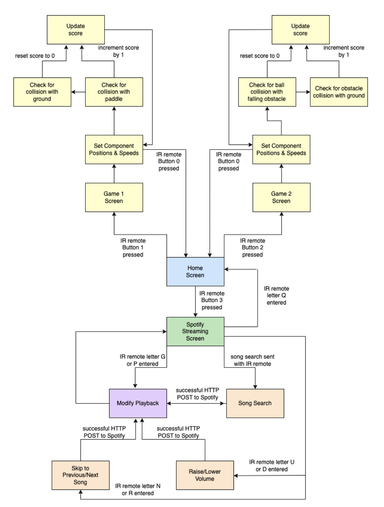
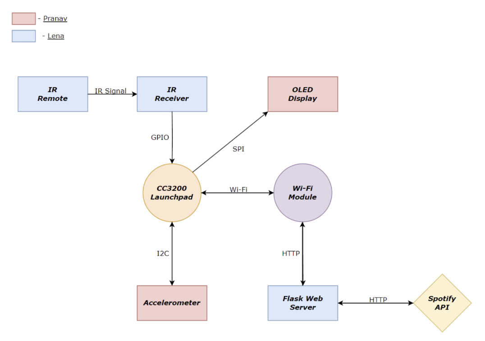
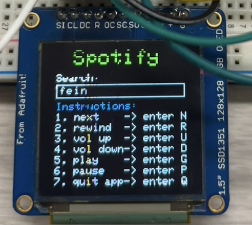
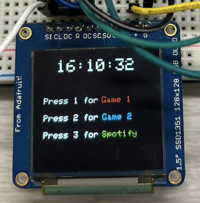
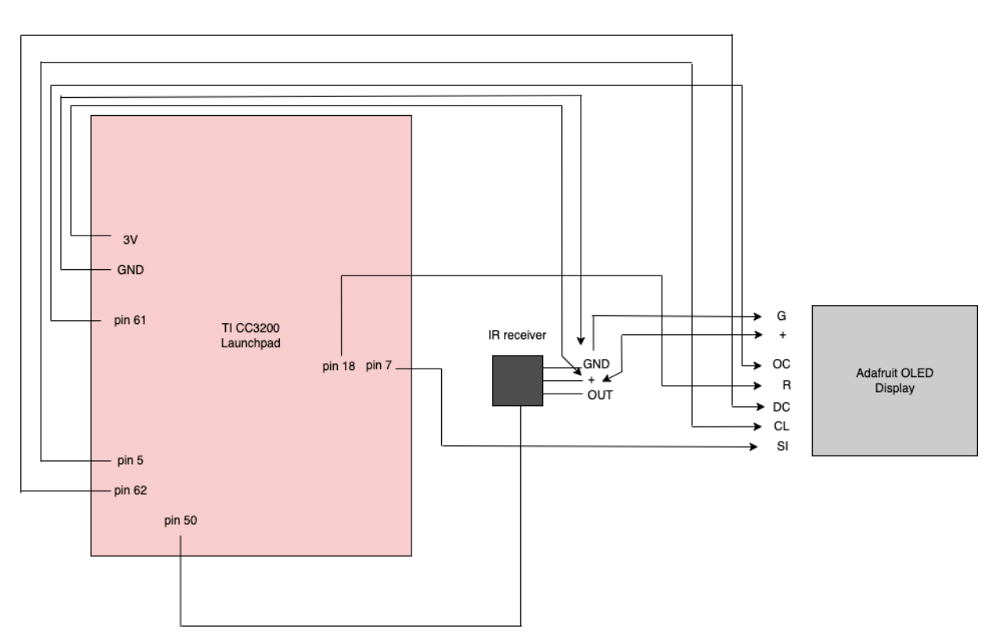
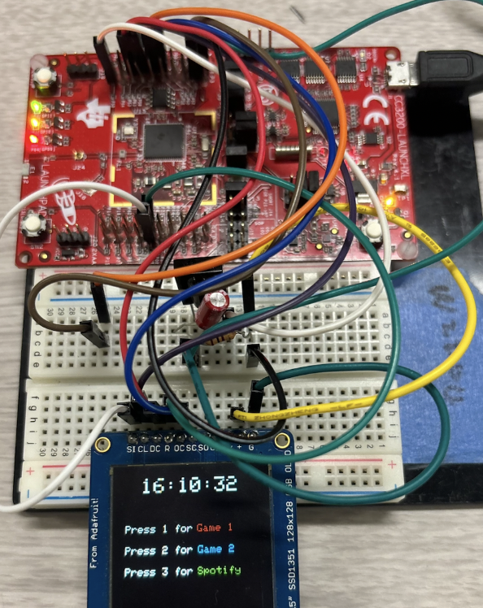

Mock Smartwatch
Lena Ray and Pranav Bhartiya (website template by Ryan Tsang)
Description
For this project, we created a multifunctional smartwatch interface designed to support music streaming, gaming, and an intuitive home screen for easy navigation. It features an OLED display to render game layouts and a Spotify widget. The home screen enables switching between music streaming and built-in games through input from the IR remote, creating an engaging user experience. The built-in games use an accelerometer for gesture-based controls, allowing users to tilt the device to move objects in the games. The first game is a single-player pong game where the objective is to keep bouncing a blue ball on a paddle at the bottom of the OLED screen. The second game is an obstacle avoidance game where red obstacles are falling from the “sky” (the top of the OLED display) and the user must navigate a white circle and avoid colliding with them. The device also has a Spotify streaming app with a search box that takes input from the IR remote for song search functionality and other streaming controls. These search queries are sent to a Flask web application which routes those requests to Spotify for music streaming.
Video Demo
Table of Contents
Design
Functional Specification
The device functions in five main states: Home (shown in blue in the diagram), Awaiting User Input (green), Playing (purple), Streaming Controls (orange), and Gaming (yellow). Upon launch, the device enters the home state, where it displays the time and presents the user with a navigation menu on the OLED screen. This menu has options to enter the games or Spotify app. Users can navigate to the desired app by pressing the corresponding button on the IR remote.
If the user decides to play one of the games, the device enters the Gaming state. The built-in games are playable using tilt controls that signal the accelerometer. When the user enters the game, the screen gets initialized and the components are drawn in their initial positions. The game enters an infinite loop, where the position of the ball is continuously checked for collisions and the score is updated according to the game rules. If the game ends, the score is reset, the screen is cleared, and all the components are drawn in their initial positions. We also check for an IR signal at the end of each cycle. Exiting the game by pressing 0 on the IR remote returns the device to the home state, allowing users to choose between music streaming and gaming again.
If the user opts for music streaming, the device displays the Spotify screen and waits for IR input from the user in the Awaiting User Input state. If the user enters G or P, the device enters the Playback state where it plays or pauses the most recently playing song on Spotify. If the user enters U, D, N, R, or any other string, the device enters the Streaming Controls state where playback is modified. Entering U or D raises or lowers the volume respectively. Entering N or R skips to the previous or next song in queue. Entering any other string performs a song search for that string in Spotify and plays the top result. After each input, the device ends up in the Playback state, followed by Awaiting User Input because the user can keep modifying playback and streaming controls as long as they are in the Spotify app. Exiting the Spotify app by entering Q returns the device to the home state, allowing users to choose between music streaming and gaming again.
State Machine Diagram:
Below is the state machine diagram, which is also displayed larger at the end of the report.
Figure 1: State Machine Diagram
System Architecture
The device’s main component is the TI CC3200 launchpad, which acts as the central processing unit with Wi-Fi connectivity. The launchpad receives input from the IR receiver and accelerometer and sends corresponding updates and commands to the OLED display based on that input. The hardware protocols used are I2C for the accelerometer and SPI for the OLED connection. The web service we used was our Flask web app which routes HTTP requests from CC3200 to the Spotify API.
The block diagram in Figure 2 shows how each component fits together in the overall system. The remote sends IR signals to the IR receiver, which connects to the CC3200 launchpad. Based on the input, the launchpad begins receiving and sending output to the OLED and accelerometer. The launchpad is also the component that connects to Wi-Fi. Over the Wi-Fi connectivity, the launchpad sends and receives HTTP requests and responses to the Flask web server, which in turn communicates with the Spotify API.
Block Diagram:
Figure 2: Block Diagram
Implementation
This project was divided into 3 major development phases: game development, Spotify integration, and navigation.
-
Game Development
The target of the first stage of development was to accomplish our target goal: developing the two games: pong and obstacle avoidance. In both games, we used the accelerometer for movement of the game components via I2C connection as well as the OLED for displaying the game components via SPI connection. The accelerometer controlled the speed and direction of the user-controlled object. This speed was determined by the degree of tilt of the board through the ParseNProcessCmd() function which read the x and y-axis registers. The components of the game were displayed using functions such as fillRect() and fillCircle(). We defined a drawString() function to display the score on the top left corner of the screen character by character by calling the drawChar() function in a loop. For the obstacle avoidance game, we also made a function generateObstaclePosition() to generate a random coordinate for the falling obstacles that the user must avoid.
The main logic for each game is in game1() and game2() functions respectively. In both, we set the state of the device to be in game mode, open I2C communication, initialize the game components, display the starting score, and enter an infinite while loop. Within the while loop, we read the tilt of the board, update the speed and position of the components, check for collision with the screen edges or with the other components, and update the score accordingly. We also check for IR input to see if the user wants to quit the game.
The second stage of development aimed to achieve our stretch goal: integrating Spotify streaming functionality. We decided to create our own Flask web server instead of using Amazon IoT for Spotify integration because we wanted flexibility and direct control over the Spotify API calls and responses. This allowed us to customize how we manage user authentication and process search queries.
To create our Flask web app, we first created a project with Spotify Developer Dashboard through our Spotify premium account and retrieved our client ID and secret key. We used Spotify OAuth authentication flow to securely obtain access tokens for interacting with the Spotify API. We set up our app’s home route to retrieve the authorization code from Spotify and redirect to the response URL, which is the callback route. The callback route handles the response from Spotify after successful authorization, allowing us to extract the authorization code and exchange it for an access token. We store the access token in the session so all subsequent requests to Spotify can use that access token.
Next, we implemented the results route. When the user types out a song to search with the IR remote and sends it, CC3200 sends an HTTP POST request to the results route with that search string in the JSON body. The Flask web app extracts the query from the request and stores it in the session. We check if the access token is available in the current session. If not, we redirect to the home route and go through the process described above to get a new access token. If there is an access token, we set up the authorization headers and query parameters and send a GET request to Spotify’s search route. After we get a response from Spotify, we parse it to extract the track titles and pass them to a lambda function that finds the most popular track from the response. Once the track to play is identified, we call play_spotify_song() which makes a PUT request to Spotify’s play route to start playing that track.
We also implemented routes for skipping to the previous or next song, adjusting the volume, and retrieving the currently playing song. These were all done similarly by checking if the access token is available, extracting the necessary JSON data from the request, and passing these parameters to the HTTP request made to Spotify.
We then wrote the HTTP POST functions for the CC3200 to send to the Flask web app. For each function, we create the headers, copy the appropriate JSON data, and call sl_Send() and sl_Recv() to send the packet to the Flask web app and receive the response. In addition, we modified our processIRSignal() function to call the appropriate function based on the IR remote input. For example, as mentioned earlier, entering just ‘P’ is the command to pause playback, so we check if the bufferSize is 1 and the only letter entered is ‘P’ before calling http_post_pause(). For any string that is not a listed command, entering it will call http_post() which sends that query as a song search to the web app.
The spotify_streaming() function contains the main logic for this app. Within it, we call connectToAccessPoint() to connect CC3200 to Wi-F, followed by tls_connect() to connect it to our Flask web app. After the Spotify screen is initialized, we enter an infinite while loop where the device waits for an IR interrupt to process what command the user is executing. The only way to break out of this is to exit the Spotify app and go back to home by entering ‘Q.’
Figure 3: Spotify Screen
Finally, we created the home screen and implemented navigation to each of the apps from the home screen and out of the apps back to the home screen. Navigation is handled by the IR remote and tracked by global flags homeState and gameState. If homeState is 1 and gameState is 0, the watch is displaying the home screen. If gameState is 1 and homeState is 0, the watch is displaying one of the games. If both are 0, the watch is displaying the Spotify screen. These flags are checked when navigation is done to know which screen to go to next based on the current state of the watch.
The home screen contains menu options that tell the user which remote buttons to press to access each app. When on the home screen, pressing 1, 2, or 3 on the IR remote takes the user to game 1, game 2, or the Spotify app respectively. When in game 1 or game 2, pressing 0 quits the game and takes the user back to the home screen. When in the Spotify app, typing the letter Q (double tapping on button 7) quits the Spotify app and takes the user back to the home screen.
Additionally, we added a time display on the home screen to mimic a real smartwatch display. We included time.h and wrote updateClock() to get the current time and draw it on the OLED in the HH:MM:SS format. Within the infinite while loop in home(), we update the clock every second and check if an IR interrupt has been detected.
Figure 4: Home Screen
Lastly, Figures 5 and 6 show our circuit schematic and which pins were used for each component.
Figure 5: Circuit Schematic
Figure 6: Hardware Wiring
Not shown in the circuit schematic are the pins configured for the accelerometer (pin 1 for I2C SCL and pin 2 for I2C SDA).
Challenges
Here are some of the challenges we faced and how we overcame them:
While developing the games, we struggled with making the movement of the objects smooth and maintaining the score display when any object enters that position. Initially, we were clearing the whole screen for every interaction of the loop in the games before updating the positions components and displaying them. This caused the game to be slow and glitchy. We fixed this issue by filling the current positions with black to cover them and then drawing the components in their new positions. This was much faster and made gameplay more smooth. Another problem we faced was that when any moving component reached the position where the score was being displayed, the score was being cleared until it was updated again. We overcame this by adding a check for the current position of the components. If a component was in the position near the score, it would change its trajectory as it does when it hits the edge of the screen.
One of the primary challenges we faced during the Spotify integration process was sending HTTP requests from the CC3200 to the Flask web app. In Lab 4, we learned how to connect to Wi-Fi and send HTTP requests to Amazon IoT. However, with our own locally-hosted web app, we needed to modify the HTTP headers in our POST and GET functions. We also updated the hex IP address value in tls_connect() to match our Flask web app’s address and removed the TLS encryption because it was configuring socket options based on the Amazon IoT certificates, which were not valid for our Flask app. After this, we were able to send successful HTTP POST requests from the CC3200 to our Flask app, allowing us to search for and play a song.
However, we noticed that we were not able to send any subsequent POST requests after the first one without rerunning the code. If we sent two song searches in a row, the CC3200 would output “POST failed” due to negative return values from sl_Send() and sl_Recv(). After debugging these functions, we realized that the socket was not being closed properly after sending a request. We fixed this by creating a new socket at the beginning of each POST function with tls_connect() and called sl_Close() at the end. With this, we were able to send consecutive POST requests successfully, allowing us to perform multiple song searches and implement streaming controls.
Finally, since we worked on game development and Spotify integration on separate boards, we realized as we combined our code that we had used some of the same pins for different purposes in our code. Thus, we had to change some pin numbers so none were being reused. Once we made the needed changes, we were able to successfully incorporate the three components onto one board.
Future Work
In the future, there are some additional features that could be implemented to improve the device’s functionality and user experience. For example, introducing additional games with more complexity would offer further entertainment options. Incorporating multiplayer functionality to the existing games (like two-player pong) could create an exciting shared gaming experience. We could also improve the graphical quality of games to enhance user engagement. Currently, we use a lot of text to explain the navigation on each screen, so we could replace some of that with icons or format it better for easier readability.
In addition, the Spotify app only supports immediate playback after search, so we could implement song queuing functionality to allow the users to create and manage playlists or queues of songs. Instead of using our lambda function to determine the most popular song for that search, we could provide users with the top search results on the OLED and allow them to select their preferred song for greater customization. Upon selection, the search results disappear and the current queue could be displayed instead. By incorporating these additional features, the device can be adjusted to offer a more personalized and engaging experience for users.
Bill Of Materials
| Item | Quantity | Cost | Source |
|---|---|---|---|
| TI CC3200 Launchpad | 1 | $55.00 (provided) | TI |
| Adafruit OLED Display | 1 | $18 (provided) | Adafruit |
| IR Receiver | 1 | $8 (provided) | Various suppliers |
| AT&T IR Remote | 1 | $20 (provided) | AT&T |
| Miscellaneous Components (wires, breadboard etc) | 1 set | $14 (provided) | Various suppliers |
| Spotify Premium Account | 1 | $9.99 | Spotify |
Total cost: $9.99